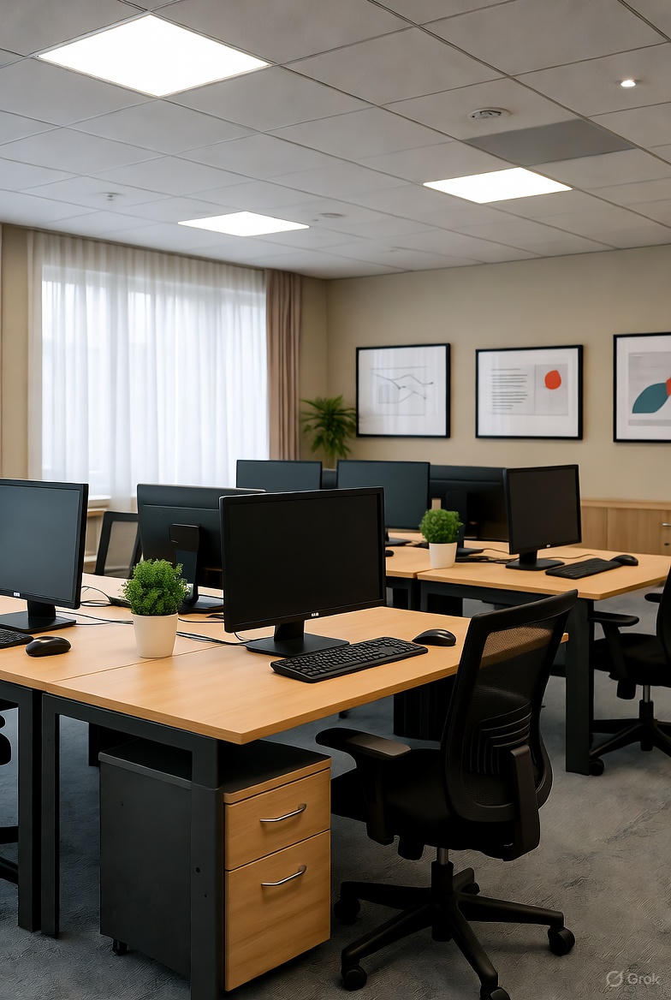

WebQuest: El Arquitecto del Respaldo (RPO/RTO y ENS)
Introducción: El desafío
¡Felicidades! Has sido contratado como consultor de seguridad informática para "Almacenes Futuro S.L.", una Pyme de 50 empleados con datos críticos. El negocio se basa en la distribución de productos perecederos, lo que implica una alta dependencia de la inmediatez y la logística. Sus operaciones dependen de dos sistemas esenciales:
1. Base de Datos SQL Server: Contiene la información de pedidos en tiempo real, stock actualizado minuto a minuto y la base de datos de 5.000 clientes (con nombres, direcciones y métodos de pago parciales, considerados datos personales sensibles). La actividad es constante durante el horario laboral (8h a 18h).
2. Servidor de archivos y contabilidad: Contiene la facturación del último año, los contratos laborales, documentos legales y la contabilidad interna. Estos archivos son igualmente vitales, pero no tienen la misma volatilidad que la BBDD de pedidos.
La Crisis actual: Actualmente, solo hacen copias completas a un disco duro externo una vez a la semana (los viernes por la noche), sin cifrar ni verificar. Esto es totalmente insuficiente, arriesgado y viola la normativa vigente. El coste de una hora de inactividad se estima en 1.500€ debido a pedidos perdidos y la imposibilidad de facturar. Además del coste económico, existe un alto riesgo de multa por RGPD debido a la exposición de datos de clientes.
Tu misión es diseñar una Política de Copias de Seguridad (Backup Policy) completa, sólida y a prueba de auditorías que garantice la continuidad del negocio (evitando la pérdida de 1.500€/hora) y el cumplimiento legal en España, especialmente en relación con el Reglamento General de Protección de Datos (RGPD) y el Esquema Nacional de Seguridad (ENS). Tu informe no es un documento técnico, sino un Informe Ejecutivo que justifica cada decisión clave ante la Dirección, demostrando que la inversión es necesaria y rentable.
Tarea
Elabora un Informe Ejecutivo que responda a las siguientes secciones, justificando cada decisión técnica, legal y económica. Las respuestas deben ser claras y concisas, sustentadas con la cita de, al menos, un recurso web de alta autoridad (documentación oficial o técnica).
1. Análisis de riesgos y definición de objetivos críticos (RPO/RTO)
Identifica los riesgos principales y define los objetivos de recuperación:
a. Riesgos primarios: Identifica y describe detalladamente el impacto económico y legal de los tres
principales riesgos por la política actual (ransomware, fallo de hardware, error humano).
b. RPO (Objetivo de Punto de Recuperación):
- BBDD SQL Server (Crítico): Define un RPO estricto (ej. menos de 30 minutos). Justifícalo por la
frecuencia de transacciones y el coste de inactividad. Explica la necesidad de copias de log
transaccional para alcanzar este RPO.
- Servidor de archivos (medio): Define un RPO más flexible (ej. 4 horas).
c. RTO (Objetivo de Tiempo de Recuperación):
- BBDD SQL Server (crítico): Define un RTO muy bajo (ej. 1-2 horas). Justifica la criticidad y menciona la
tecnología de virtualización de copias (Instant VM Recovery) como requisito para lograrlo.
- Servidor de archivos (medio): Define un RTO más realista (ej. 4-8 horas).
d. Riesgo reputacional y legal: Describe las implicaciones del incumplimiento RPO/RTO en la fidelidad del
cliente y la exposición legal por pérdida de datos sensibles.
2. Diseño de la arquitectura de backup
Propón y justifica la arquitectura física y lógica, enfocada en la relación coste-seguridad:
a. Modelo de copia (Regla 3-2-1): ¿Cómo aplicarías el 3-2-1 de forma económica?
- Detalla las tres copias producción, copia local (remota/offline) y los dos tipos de medio.
- Detalla cómo conseguir la copia air-gapped, contrastando la inmutabilidad de la Nube (WORM) con la
rotación física (discos/cintas LTO).
b. Medios, rotación y retención: ¿Qué combinación de medios (NAS, LTO, Nube) usarías para la retención a
largo plazo (más de 2 años)?
- Análisis coste/beneficio: Compara el coste operativo a largo plazo de la Nube frente a la
inversión inicial de LTO para la retención histórica.
- Política de rotación (GFS): ¿Qué estrategia GFS recomendarías para los medios físicos locales y la
retención legal de facturación?
c. Estrategia de copia: Explica por qué elegirías una combinación de copias completas, incrementales y
diferenciales. Menciona el trade-off crítico: Las copias incrementales son rápidas (mejor ventana de
opia), pero las diferenciales/completas permiten una restauración mucho más rápida (mejor RTO).
3. Configuración crítica: Seguridad, eficiencia y logística
Detalla la configuración técnica para la defensa contra ransomware.
a. Cifrado (seguridad y legalidad):
- ¿Qué nivel de cifrado (ej. AES-256) propondrías?
- CRÍTICO LEGAL (RGPD): Justifica basándote en el Artículo 32 del RGPD (obligación de DPIA) por qué el
cifrado es un requisito indirecto obligatorio para mitigar la fuga de datos personales.
- Gestión de claves (KM): Define cómo y dónde se custodiaría la clave de cifrado para el acceso en un
desastre total.
b. Compresión y detección de fallos: ¿Por qué y cuándo aplicarías la compresión?
- Riesgos de corrupción: Explica que la compresión de un bloque dañado puede llevar a la pérdida total del
archivo irrecuperable.
- Prioridad técnica: Justifica la secuencia óptima (Comprimir los datos antes de cifrarlos, para aumentar
la eficiencia).
c. Periodicidad y ventana de copia: Basado en tu RPO estricto, define el calendario de copias
(total/diferencial/incremental). Asegura que la copia no interfiera con el horario laboral (ventana de
copia).
4. Verificación, logs y cumplimiento normativo (CRÍTICO)
Convence a la Dirección de que el nuevo sistema es auditable, fiable y legal.
a. Verificación de integridad (checksum): ¿Qué proceso de verificación (ej. checksum o hash) implementarías
y con qué frecuencia? ¿Por qué la verificación es más importante que la propia copia?
b. Prueba de restauración (test y restaurabilidad):
- ¿Con qué frecuencia se realizaría una prueba de restauración completa (DR Test)? Define la frecuencia
mínima legal/recomendada.
- La prueba debe simular un fallo. ¿Cómo probarías la restauración de la BBDD SQL Server en un entorno
aislado (sandbox) (nunca en producción)?
c. Logs y errores:
- ¿Qué información esencial deben registrar los logs (diferenciando logs de aplicación VSS/SQL y logs del
sistema) para el troubleshooting?
- Busca una guía sobre cómo leer los logs de un servicio de copia y explica el proceso lógico paso a paso
para diagnosticar un fallo común (ej. "Error 0x80070005 - Acceso Denegado").
d. Documentación y ENS (obligatoriedad legal):
- La BBDD es nivel MEDIO según el ENS. ¿Qué te exige la Guía CCN-STIC 822/ENS sobre la gestión, registro y
prueba de las copias para este nivel?
- Busca el documento oficial y extrae una cita que justifique la obligatoriedad de documentar y probar la
restauración periódicamente.
Proceso (recursos web)
Utiliza los siguientes tipos de recursos para encontrar la información necesaria. Debes citar la URL exacta de cada recurso:
- Regla 3-2-1 y Arquitectura: Artículos de blog de empresas como Acronis, Veeam o Veritas. - RPO/RTO y Costes: Definiciones, casos de estudio y la necesidad de Instant VM Recovery. - Cifrado/Compresión Práctica: Tutoriales de software (NAKIVO, Vinchin) y riesgos de corrupción. - Normativa RGPD/ENS/CCN: Documentación oficial (AEPD, CCN-CERT/ENS). - Diagnóstico: Documentación oficial (Microsoft Learn, Veeam Knowledge Base) sobre códigos de error VSS y logs (aplicación vs. sistema).
Recursos Adicionales
Evaluación y Rúbrica
Tu informe será evaluado en base a los siguientes criterios. La puntuación máxima es 10 puntos (escala 0-10):
| Criterio | 0 - 2 (Bajo) | 3 - 5 (Medio) | 6 - 8 (Alto) | 9 - 10 (Excelente) |
|---|---|---|---|---|
| A. Rigor Técnico (40%) |
La definición de RPO/RTO es vaga o inexistente. No se aplica la Regla 3-2-1 ni se justifica el cifrado o compresión. | RPO/RTO definidos de forma general. Se menciona la Regla 3-2-1, pero la justificación de los medios (ej. LTO vs Nube) es débil. | RPO/RTO bien justificados con el coste de la inactividad. Aplicación correcta de la Regla 3-2-1. Justificación clara de la elección de cifrado/compresión. | RPO/RTO específicos y diferenciados para cada sistema crítico. El diseño de la arquitectura es óptimo, incluye gestión de claves y la justificación de la Periodicidad/Cifrado es completa y profesional. |
| B. Cumplimiento Normativo (30%) |
No se hace referencia al RGPD o al ENS. No se menciona la documentación o prueba de restauración. | Se mencionan el RGPD y el ENS, pero sin citar recursos o normativas específicas. El apartado de logs es insuficiente. | Se identifica la obligatoriedad del cifrado por el RGPD. Se extrae una cita relevante del CCN-CERT/ENS para justificar la prueba de restauración o logs. | Se vincula directamente la necesidad del cifrado con el RGPD y el Artículo 32. Se identifican y citan con precisión las exigencias del ENS/CCN-CERT sobre la gestión de logs y la prueba de restauración, demostrando un conocimiento profundo de la normativa. |
| C. Calidad de la Investigación (30%) |
Se utilizan pocas URLs o fuentes de baja autoridad (foros no especializados, blogs sin fecha). La organización del informe es confusa. | Se citan los recursos solicitados, pero la justificación en el informe es superficial. La mayoría de los recursos son de autoridad media. | Se citan recursos de Alta Autoridad (Microsoft, Veeam, CCN-CERT). El informe está bien estructurado y las URLs están citadas correctamente. | Se utiliza una variedad óptima de recursos de Alta Autoridad. El informe es un documento ejecutivo impecable, con un lenguaje profesional y una justificación clara para cada decisión, demostrando un excelente pensamiento crítico. |
Autoevaluación (Checklist)
Recuerda que cada sección del informe debe estar claramente identificada y justificada. La puntuación final dependerá de la profundidad del análisis, la calidad de las fuentes citadas y la claridad en la presentación de las ideas.
Marca los puntos que cumples. Se calculará tu nota estimada según la rúbrica.
Conclusión
Al completar este informe, habrás diseñado una política de copias de seguridad robusta y legalmente conforme que protege los datos críticos de "Almacenes Futuro S.L." y asegura la continuidad del negocio frente a incidentes graves. Tu enfoque equilibrado entre coste, seguridad y cumplimiento normativo demostrará a la Dirección que la inversión en una estrategia de backup adecuada es esencial para el éxito y la reputación a largo plazo de la empresa.